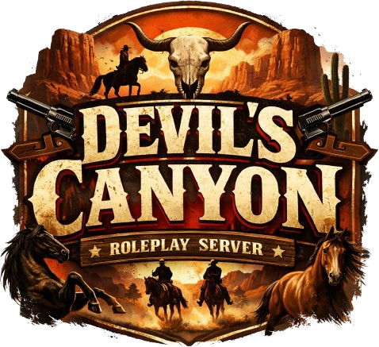

Deutsches RedM Roleplay
Anno 1899Was hier gespielt wird
Devil's Canyon ist ein deutschsprachiger Roleplay-Server für Red Dead Redemption 2. Kein Deathmatch mit Hüten, sondern eine Welt, in der euer Charakter ein Leben führt: mit Arbeit, Ruf, Schulden und Leuten, die sich an euch erinnern.
Wir setzen auf stabiles, faires Spiel statt auf möglichst viele Funktionen. Was bei uns läuft, läuft — und was nicht rundläuft, wird repariert. Die Wirtschaft hängt zusammen: Wer sammelt, verarbeitet und verkauft, hält sie am Leben. Wer stiehlt, auch.
Was euch erwartet
Läden, Werkstätten und Ranches mit Bankkonto, Angestellten und Gehaltsabrechnung. Wer will, führt sein eigenes Geschäft.
Rohstoff, Verarbeitung, Ware. Der Schmied braucht den Bergarbeiter, der Schneider den Jäger. Handel lohnt sich, weil er muss.
Jagd auf Wild und legendäre Tiere, Fischerei, Kräutersuche, Bienenzucht, Ackerbau. Die Wildnis ernährt, wenn man sie kennt.
Häuser und Grundstücke zum Kaufen und Einrichten. Mit Lager, Möbeln und einer Tür, die man abschließen kann.
Das Wetter folgt dem Kalender. Im Winter wandert die Schneegrenze bis in die Täler, im Süden bleibt es staubig und heiß.
Sheriffs, Marshals, Gefängnis und Kopfgeld auf der einen Seite. Schwarzmarkt, Raub und Schmuggel auf der anderen.
Ideen und Wünsche landen nicht in einem Postfach, sondern im Gespräch. Vieles, was heute läuft, kam von Spielern.
Wer mehr will als mitspielen, kann mitbauen. Unser Team besteht aus Leuten, die als Spieler angefangen haben.
Mitspielen
Wir spielen mit Whitelist. Das heißt nicht, dass wir schwer zu erreichen sind — es heißt, dass wir wissen wollen, wer mitspielt.
Wo ihr uns findet
Wer dahintersteckt
Ein kleines Team, das den Server nebenbei betreibt — mit dem Anspruch, dass Fehler schnell verschwinden und Fragen beantwortet werden. Die meisten von uns haben als Spieler angefangen.